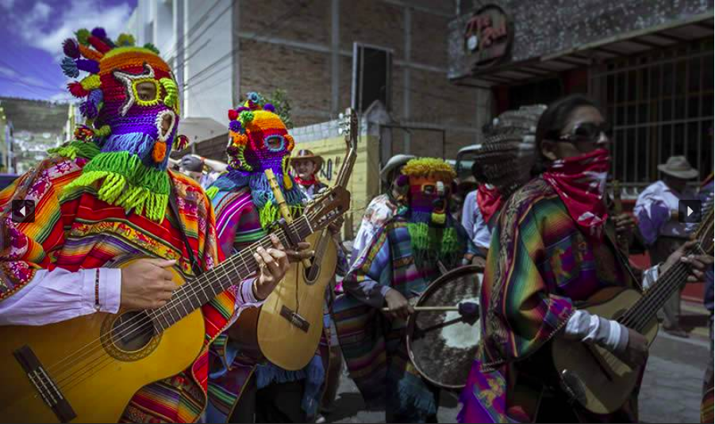
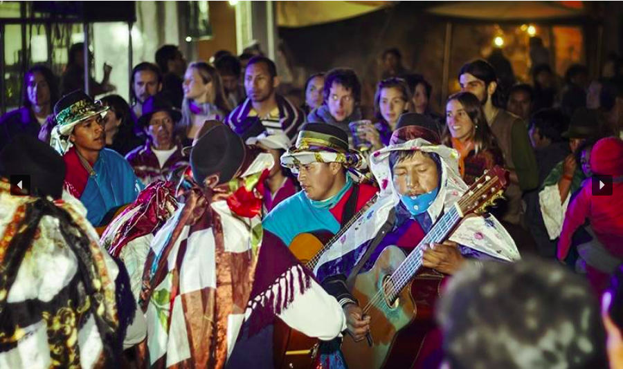
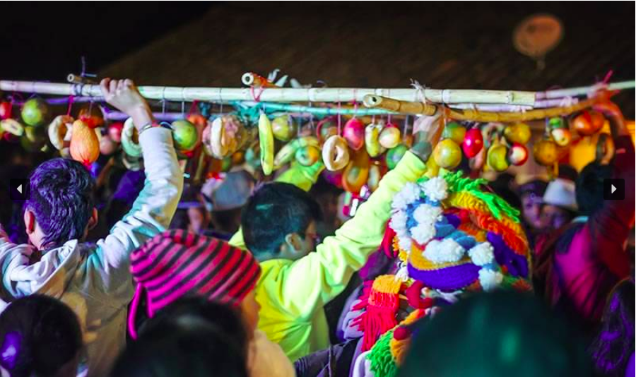
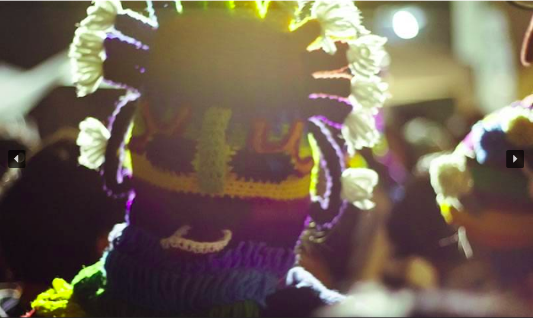
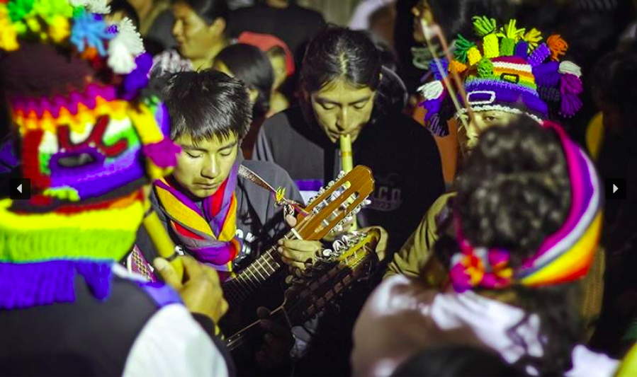
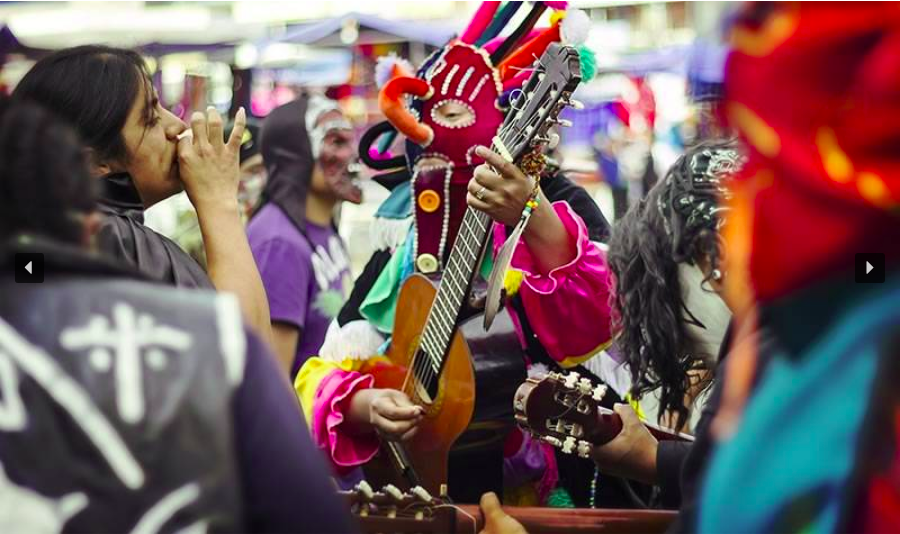
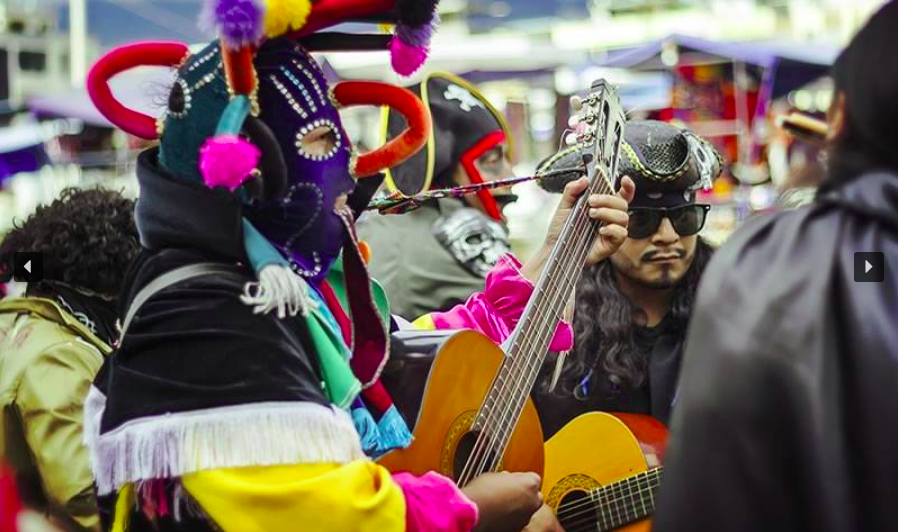

FOLKLORE POETICO







Folklore Social
INTI RAYMI
El origen del Inti Raymi se remonta a la época de los grandes gobernantes
Incas y a la cuna de su imperio: Cusco, cuya esencia ha sido desde esa
época: rendir culto a las deidades andinas, agradecer por las cosechas
obtenidas y exaltar la fecundidad de la madre tierra. Esta festividad
Mientras varias comunidades inician el 22 de junio con el baño ritual en
ríos, vertientes y cascadas sagradas, otras esperan la llegada del día y
el momento apropiados para iniciar sus festividades. En todas las
comunidades indígenas del cantón Otavalo, se realizan los siguientes actos
para le celebración del Inti Raymi.
Armay Chishi – Baño Ritual
Este ritual se lo realiza el 22 de junio, día del solsticio de verano. Las
cascadas, ríos y vertientes poseen sitios especiales donde se concentra la
energía durante el año, y el baño ritual trata de captarlas a fin de
cargarse de nuevas fuerzas, eliminar energías negativas acumuladas en el
año y empezar así con la celebración del Inti Raymi. El baño tiene un
claro sentido de purificación y se vincula a los significados agrarios de
la fiesta